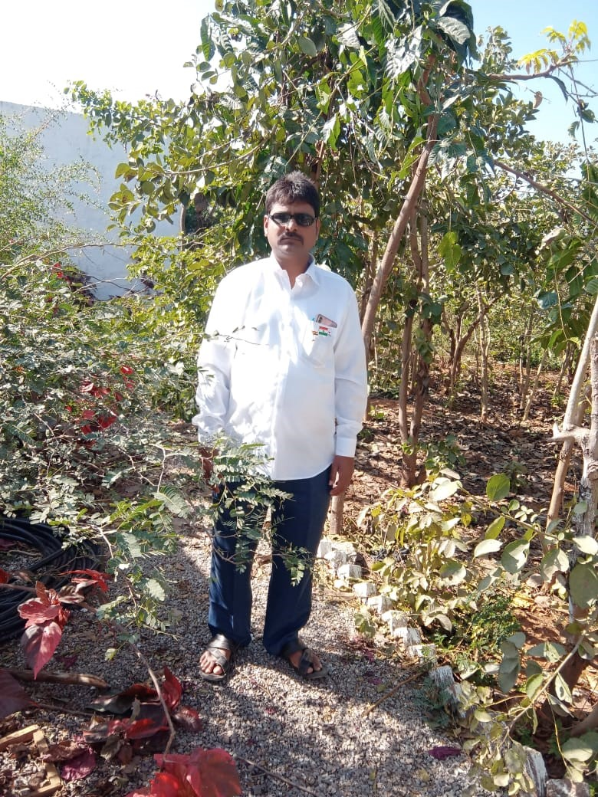

About Masjid
Wattipally is a village in jagdevpur siddipet district of Telangana region.
Masjid is a place where all the muslims gather and pray together to the GOD.
They believe that there is a life after the death where they have to give the answers
for their good deeds and bad deeeds.
They often follow rules of ISLAM.
They believe in peace and unity

The above pics shows the masjid images.
it was established in 90's with the help of villagers.
The SARDAR of the masjid is MR.RUKMODDIN s/o late: Nasroddin who is the member of the village
He is nearly working as a SARDAR past three years.
He has been taken all the responsibilty of Masjid and provided better facilities.

They believe in peace and unity.
They celebrate every festival together.
They often follow the timings of prayer and pray togetherly.
This is about the wattipally masjid.